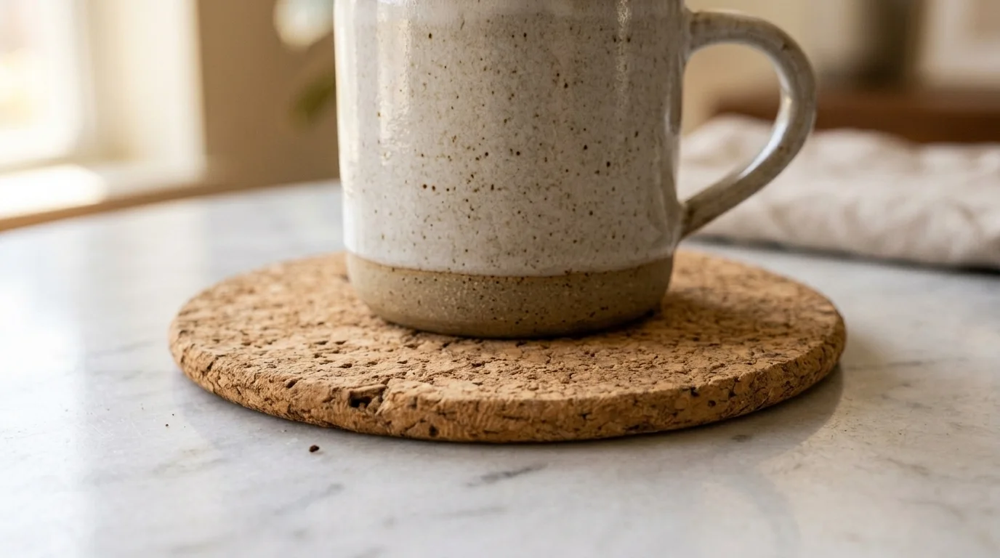

Apa yang Dimaksud dengan Eco Office Collection?
Koleksi Eco Office adalah kategori merchandise kantor yang secara khusus menggunakan bahan alami dan daur ulang, ditujukan bagi perusahaan yang ingin menerapkan prinsip keberlanjutan secara konsisten di seluruh lini merchandise kerjanya.
Berbeda dari merchandise ramah lingkungan yang dipilih secara acak berdasarkan bahan yang tersedia, Eco Office Collection disusun sebagai satu kategori produk yang saling melengkapi, mencakup kebutuhan alat tulis, tas kerja, hingga aksesori meja dengan tema material yang konsisten.
Pendekatan ini memudahkan perusahaan dalam membangun narasi keberlanjutan yang utuh, karena seluruh item dalam koleksi memiliki benang merah yang sama, yaitu penggunaan bahan alami atau hasil daur ulang sebagai pengganti material konvensional berbasis plastik.
Apa Karakteristik Bahan Bamboo untuk Merchandise Kantor?
Bahan bamboo untuk merchandise kantor memiliki karakteristik ringan, kuat, dan berasal dari tanaman yang tumbuh relatif cepat sehingga dianggap sebagai sumber daya yang lebih terbarukan dibandingkan kayu keras pada umumnya.
Bambu sering digunakan untuk produk seperti pulpen, penggaris, tempat pensil, hingga casing pelindung untuk perangkat elektronik ringan.
"Tekstur alami bambu yang unik memberikan nuansa estetika yang berbeda dibandingkan dengan produk yang terbuat dari plastik, serta secara visual menyampaikan pesan tentang keberlanjutan kepada para penerimanya."
— Meilita Mujayanti, Penulis Merchandise Kantor
Dari sisi produksi, bambu memerlukan teknik finishing tertentu, seperti pelapisan minyak alami atau vernis ramah lingkungan, agar permukaannya tetap halus dan tahan terhadap kelembapan.
Teknik cetak logo pada bambu umumnya menggunakan laser engraving agar hasil ukiran presisi dan tahan lama meski permukaan bahan tidak serata material sintetis.
Apa Karakteristik Bahan Cork untuk Merchandise Kantor?
Bahan cork atau gabus alami untuk merchandise kantor memiliki karakteristik ringan, elastis, tahan air, dan berasal dari kulit pohon ek gabus yang dapat tumbuh kembali tanpa perlu menebang pohonnya.
Karakteristik elastis pada cork membuatnya cocok digunakan untuk produk seperti tatakan gelas, alas mouse, hingga sampul notebook. Permukaan cork yang unik dan bertekstur alami juga memberikan kesan hangat dan organik, berbeda dari kesan modern pada bahan logam atau plastik.

Selain estetikanya, cork juga dikenal memiliki sifat tahan air alami dan tidak mudah menyerap noda, sehingga cocok digunakan pada produk yang sering bersentuhan dengan permukaan meja kerja, seperti tatakan gelas atau alas kerja meja.
Apa Karakteristik Bahan Recycled Canvas untuk Merchandise Kantor?
Bahan recycled canvas untuk merchandise kantor memiliki karakteristik kuat, tahan lama, dan diproduksi dari serat kain daur ulang, sehingga membantu mengurangi kebutuhan terhadap kain baru dari sumber daya mentah.
Recycled canvas umumnya digunakan untuk produk seperti totebag, tas laptop, dan pouch aksesori. Tekstur kain yang tebal dan kokoh membuat bahan ini cocok untuk kebutuhan sehari-hari yang membutuhkan daya tahan tinggi, seperti membawa laptop atau dokumen kerja.
Dari sisi visual, recycled canvas dapat dicetak menggunakan teknik sablon atau bordir logo, tergantung tingkat detail desain yang diinginkan. Bordir umumnya memberikan kesan lebih premium dan tahan lama, sementara sablon lebih cocok untuk desain dengan detail warna yang lebih kompleks.
Produk Apa Saja yang Tersedia dalam Eco Office Collection?
Produk yang tersedia dalam Eco Office Collection mencakup alat tulis bambu, tatakan gelas dan alas kerja berbahan cork, serta tas kerja dan pouch berbahan recycled canvas yang seluruhnya dapat dicetak dengan logo perusahaan.
Kombinasi ketiga bahan ini memungkinkan perusahaan menyusun paket merchandise yang lengkap namun tetap konsisten secara tema keberlanjutan.
Sebagai contoh, satu paket dapat terdiri dari pulpen bambu, notebook bersampul cork, dan totebag recycled canvas yang digunakan bersamaan sebagai satu kesatuan koleksi.
Penyusunan kombinasi produk sebaiknya disesuaikan dengan kebutuhan fungsional penerima. Karyawan operasional misalnya lebih membutuhkan alat tulis dan tas kerja harian, sementara klien atau mitra bisnis dapat diberikan kombinasi produk dengan finishing lebih rapi sebagai bentuk apresiasi.

Kesimpulan
Eco Office Collection menghadirkan alternatif merchandise kantor yang mengedepankan bahan bamboo, cork, dan recycled canvas sebagai wujud nyata komitmen keberlanjutan perusahaan.
Setiap bahan memiliki karakteristik dan kegunaan yang berbeda, sehingga pemilihan produk perlu disesuaikan dengan fungsi dan target penerimanya.
Dengan kombinasi yang tepat, koleksi ini dapat membantu perusahaan menyampaikan pesan keberlanjutan secara konsisten melalui merchandise kantor yang digunakan sehari-hari.